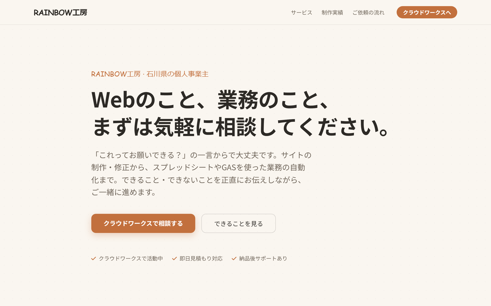
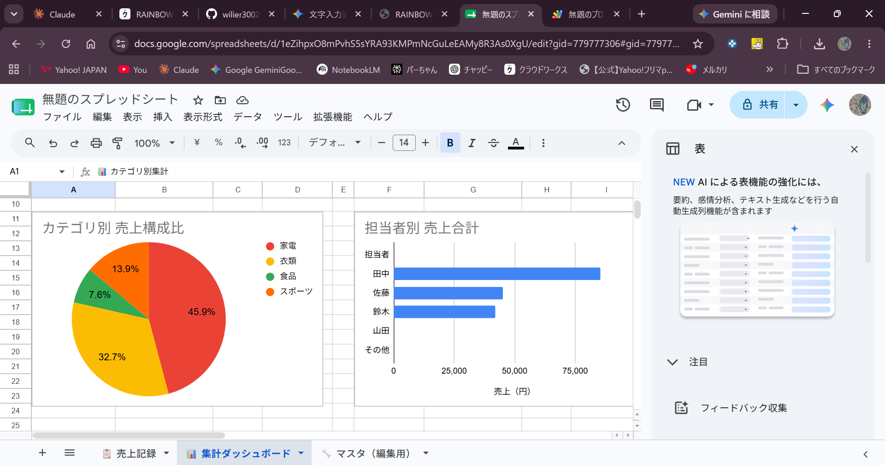
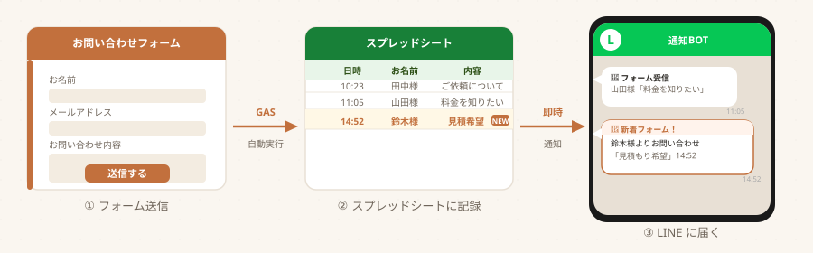
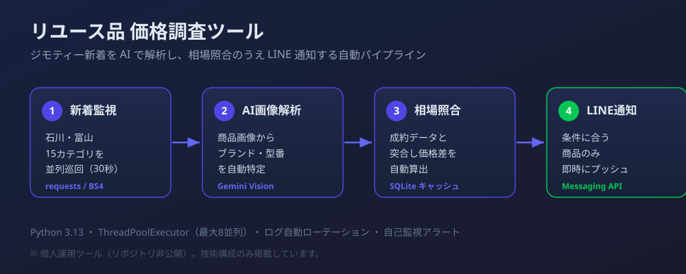
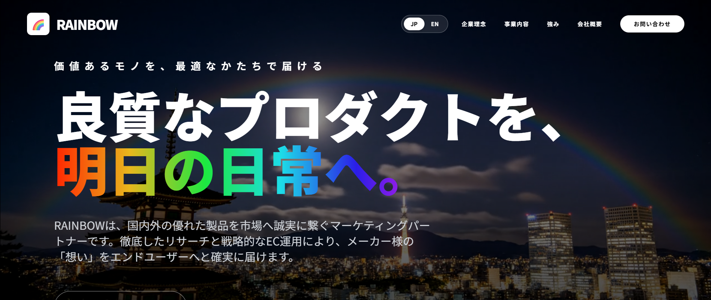
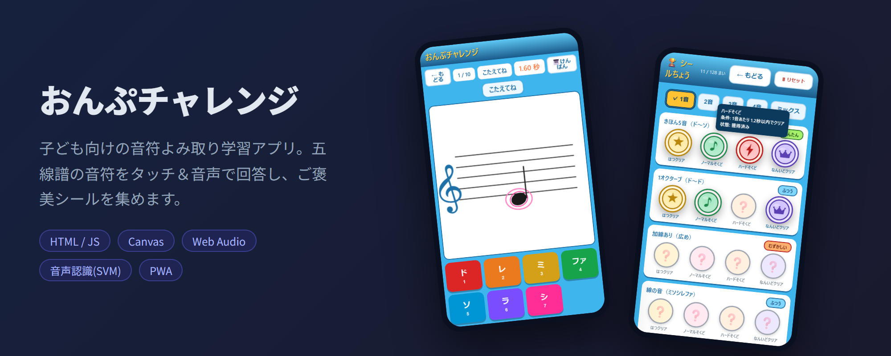

RAINBOW工房 / 個人事業主
いろんな現場を渡り歩いてきた、石川県の個人事業主です。
得意なのは スプレッドシート整理と、GASを使った業務の自動化。
毎日の「めんどくさい作業」を、そっと減らすお手伝いをしています。
About
電気工事、便利屋、自転車整備……これまで30近くの現場で働いてきました。 一つの仕事を長く、というタイプではなかったのですが、 その分いろんな業種の「現場のめんどくささ」を肌で知っています。
だからこそ、いきなり「最新ツールを入れましょう」とは言いません。 まずは「毎朝これが地味に面倒で…」という愚痴のようなことから、 じっくり聞かせてください。そこをほぐすのが私の仕事だと思っています。
華やかな経歴ではありませんが、 分からないことを分かったフリでごまかさない——そこだけは約束します。
どんな小さなことでも、お気軽に。
電気工事・便利屋・物流・小売など多業種の現場を経験。机の上だけでは分からない"リアル"を知っています。
個人事業主として顧客折衝の経験多数。「何が困っているか」を一緒に整理するところから始めます。
第二種電気工事士・古物商許可・Webクリエイター能力認定試験エキスパートほか
Services
中心は「スプレッドシート・GASによる業務の自動化」。派手なことはできませんが、確実にできることを一つひとつ丁寧に仕上げます。
関数の修正・プルダウン設定・条件付き書式・集計グラフ化。「なんとなく使っている表」を、実際に使いやすい形に整えます。
探す・直すストレスが減って、そのまま使える表に
Googleフォームとスプレッドシートを連携し、回答が来たらLINEやメールに自動で通知する仕組みを作ります。
問い合わせの見逃し・対応漏れがなくなる
Google Apps Script を使い、毎日同じことをする手作業を自動化します。「毎朝コピペしている作業」などご相談ください。
毎朝の手作業が、ボタンひとつ・または全自動に
1ページのシンプルなサイトやランディングページなら、制作からお引き受けします。既存サイトの「ここだけ直したい」という小さな修正・更新ももちろん歓迎です。
「ここだけ直したい」が、すぐ形になる
Price
内容によって変わるので、あくまで目安です。お見積もりは無料。まずはお気軽にご相談ください。
※最短2〜3日〜（内容・混み具合により前後します）／継続のご依頼はご相談ください
Works


プルダウン入力・条件付き書式（達成/未達の自動色分け）・SUMIF集計・グラフ自動生成を組み込んだ業務用シート。GASで一括生成しています。
デモを見る
Googleフォーム送信を起点に、回答をスプレッドシート記録＋LINE通知する自動化スクリプト。トークンはPropertiesServiceで安全に管理しています。
コードを見る
もともと自分用に作ったツール。ジモティーの新着投稿をGemini Vision AIで解析し、フリマ相場と照合してLINEに通知します。15カテゴリを並列で巡回し、24時間自動で動かしています。
稼働中（個人運用・コード非公開）
架空のEC事業会社のコーポレートサイト。GSAPによるイントロアニメーション・日英切替・スクロールリビール・お問い合わせフォームを実装。
サイトを見る
「楽しく続けられる音符の教材があったらいいな」と思って作った、子ども向けの学習アプリ。五線譜の音符をタッチ＆音声で答えて、ご褒美シールを集めます。Canvasで譜面描画、機械学習(SVM)で音声判定、PWAでオフライン対応。
個人制作アプリ（コード非公開）Voice
いただいた声を、これから少しずつ掲載していきます。
最初のお客様の声を、
ここに掲載予定です。
ご依頼、お待ちしています。
一件一件、丁寧に取り組みます。
まだ駆け出しですが、心を込めて。
Contact
「こんな小さなこと、頼んでいいのかな」と思うようなことでも大丈夫です。
まずは気軽に声をかけてください。クラウドワークスからご連絡いただけたら嬉しいです。